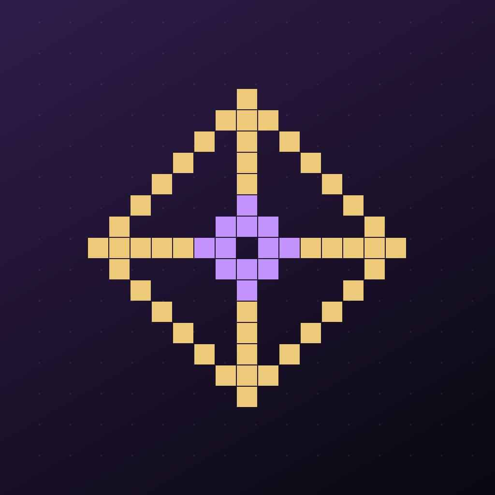

ARMANDI · ELEGENETON
PIXEL TAROT
A quieter kind of discovery.
Symbols create your reality.
A creative premise, not a supernatural promise. Choose an element and four symbols, meet one of 22 authored perspectives, and turn what resonates into a small action of your own.
Pixel Tarot is an offline reflection practice. It is not an AI chatbot, does not predict the future, and is not professional advice.
SUPPORT
Something needs attention?
Contact armando.ayaks@gmail.com. Include your device model, iOS version, app version, and steps to reproduce the issue. Screenshots can help, but please remove private journal text first.
Frequently asked questions
How do I begin?
Choose English or Spanish, enter an optional name, and enter the Sanctuary. Tap Discover a presence, choose one element and one symbol from each of four groups, then Reveal. The same five-part combination calls the same presence.
How do answers work?
The app selects from a local library of written perspectives using rules for some topics and conversational intents. Each presence has its own voice. It is not generative AI and cannot understand every question; content will eventually repeat. You choose whether a perspective is useful.
How do charms and AR unlock?
After a reflection, tap Seal this Working. Write an insight in your own words, choose a realistic action and a charm. Sealing opens that presence's AR chamber. In Egregodex, open the presence and choose Experience in AR. There are no paid pulls, timers or lost streaks.
What if AR or animation is unavailable?
AR requires a compatible physical device and camera access. Quick Look can show the 3D object when AR is unavailable. Animations are silent; they pause in the background and respect Reduce Motion and the Animated cards setting. Your journal and collection remain available without AR.
Where is my grimoire stored?
On your device, in the app's private storage. There is no account or cloud sync. Apple device backups may include it according to your settings. Browser and native-app collections are separate; this release does not import the web app's progress.
Can I export or delete my data?
In Settings, use Export my grimoire (JSON), or Delete all my data. In Journal you can delete individual Workings. Exported copies and Apple backups are separate and are not erased by the app's reset. Export is for keeping a readable archive; importing it is not currently supported.
What makes a Working integrated?
Return to Journal after trying your action, and record what actually happened. There is no deadline or required result. The observation, not repeated app use, completes the step.
Can I make the interface easier to read?
Use iOS Text Size and accessibility settings. Cards preserve their proportions, text can grow and pages scroll when needed. On iPhone Duo the layout responds to available space, orientation and the active fold.
AYUDA EN ESPAÑOL
Los símbolos crean tu realidad.
Pixel Tarot es un grimorio de bolsillo para explorar una situación desde otra perspectiva. No predice el futuro ni sustituye ayuda profesional. Sus respuestas están escritas e incluidas en la app; no son generadas por IA y pueden repetirse.
Para empezar: entra al Santuario, toca Descubrir una presencia y elige un elemento y cuatro símbolos. Para conservar una reflexión, sella una Obra con una idea tuya, una acción a tu alcance y un charm. Así se abre la experiencia AR de esa presencia.
Tu información: el diario vive en tu dispositivo. Puedes exportarlo en JSON o borrarlo desde Ajustes. Las copias exportadas y los respaldos de Apple se gestionan por separado. El progreso de la web no se importa en esta versión.
¿No ves AR? necesitas un dispositivo físico compatible y permiso de cámara. La vista 3D es la alternativa. Las cartas animadas no tienen sonido y respetan Reducir movimiento.
Contacto: armando.ayaks@gmail.com. Incluye modelo de dispositivo, versión de iOS y pasos para reproducir el problema. Evita compartir texto privado de tu diario.